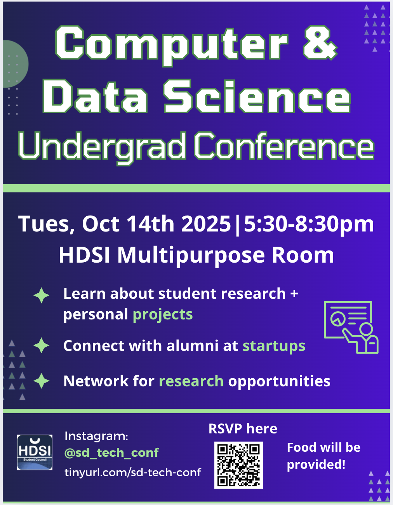

San Diego Undergraduate Tech Conference

What We Are
The San Diego Undergraduate Tech Conference is a student-run event designed to celebrate the creativity and innovation of undergraduate work in computing and data sciences.
This is not just for research—it’s a space where students can showcase passion projects, dive deeper into niche topics, and present internship work that has had a meaningful impact.
- 📜 Turn Your Work into a Publication – Whether it’s a personal project, independent research, or internship experience, this conference provides a platform to professionally publish the hard work you've done.
- 🫱🏽🫲🏾 Refine Your Public Speaking Skills – Present your work in a low-pressure, encouraging environment.
- 🌐 Expand Your Professional Network – Meet peers, faculty, and industry professionals who share your enthusiasm for computing and data sciences.
Our Mission
- Empowering Undergraduates – Providing a structured and accessible platform for students to present and discuss their work.
- Encouraging Collaboration – Fostering a dynamic community of thinkers, builders, and innovators.
- Ensuring Fair Recognition – Through a blind review process with experienced HDSI tutors and lecturers, every submission is evaluated on its merit.
Application Process
Applications are closed for 2025. To participate, students must submit a proposal outlining their project, research, or topic of interest.
📌 Submit Your Application
When & Where?
The 2026 conference is currently being planned.
Last year the conference event was held October 14th 2025 5:30-8:30pm on the UCSD Campus in the HDSI Multipurpose Room and hosted over 100 attendees!
Get Involved
Explore the site for more details about submission guidelines, the event schedule, and how to participate.
For any questions, please visit our Contact page.
We can't wait to see your innovative ideas and contributions!